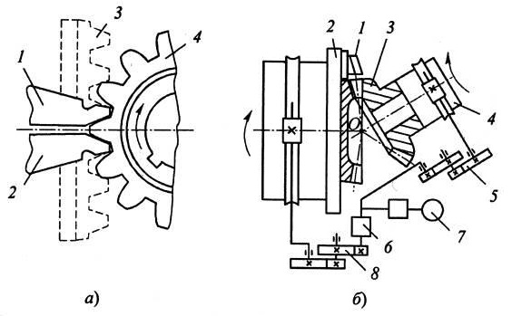
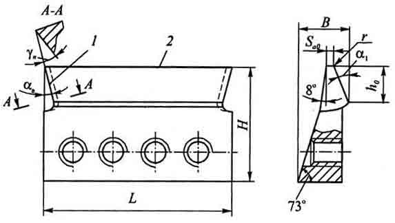
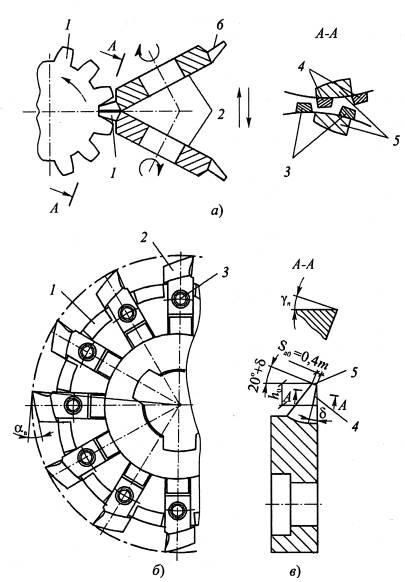

Зубострогальные резцы получили наибольшее применение для нарезания прямозубых конических колес. Они применяются на чистовых операциях и работают по методу обката, а также на черновых операциях - по методу копирования. В последнем случае используются те же станки, что и при методе обкаточного огибания, но работающие при выключенном движении обката.
Строгание каждого зуба колеса производится двумя резцами на станках-полуавтоматах моделей 5С276П, 5А26 и др., а также фирмы "Глисон" (США) по схеме, представленной на рисунке ниже позиция (а). Здесь резцы 1 и 2, установленные в суппорте на люльке станка, представляют собой впадину зуба воображаемого производящего колеса 3, с которым в процессе зубонарезания находится в зацеплении обрабатываемое колесо 4.
Как видно из кинематической схемы зубострогального станка (б), в процессе обката заготовка колеса 3, установленная в бабке 4, при вращении вокруг своей оси кинематически связана с вращением люльки 2. На схеме также показаны: 5 - гитара деления; 6 - механизм деления; 7 - электропривод; 8 - гитара обкатки.
В процессе обработки резцы l получают возвратно-поступательное движение от кулачков (на схеме не показаны) и работают попеременно. При движении к точке О пересечения образующих начальных конусов производящего и нарезаемого колес одну боковую поверхность зуба колеса обрабатывает (при прямом ходе) первый резец, а другую боковую поверхность (при обратном ходе) - второй резец. Движение обката осуществляется за счет поворота заготовки и люльки вокруг своих осей.
При черновом нарезании движение обката выключается и оба резца совершают только возвратно-поступательное движение и нарезают зубья с прямолинейным профилем по методу копирования. Таким способом нарезают колеса модулем m = 2,5... 16 мм и диаметром до 800 мм. При этом из целой заготовки за одну операцию нарезают зубья модулем m < 4 мм, а свыше - за две операции: черновую и чистовую (за несколько ходов в зависимости от модуля и требуемой точности). Колеса диаметром 800...3000 мм обрабатывают строганием по шаблону на специальных станках, например модели 5Е283 и др.
Зубострогание из-за прерывистости процесса и низких скоростей резания (12...15 м/мин) является малопроизводительным способом. Однако этот способ универсален, инструменты дешевы, просты по конструкции и обеспечивают высокую точность обработки (6...8-я степень). Поэтому зубострогание получило широкое применение как в мелкосерийном, так и в крупносерийном производстве.
Зубострогальный резец для чистовой обработки представляет собой фасонный призматический инструмент с двумя взаимозаменяемыми рабочими частями на концах, имеющими прямолинейные боковую 1 и вершинную 2 режущие кромки. Зубострогальные резцы стандартизированы и выпускаются серийно. ГОСТ 5392-80 устанавливает четыре типа таких резцов, отличающихся размерами (H, L и др.) в зависимости от диапазона модулей нарезаемых колес. Например, резцы типа I предназначены для нарезания колес модулем m = 0,3...3,25 мм, а типа IV - для нарезания колес модулем m = 13...20 мм. Профиль режущих кромок черновых резцов не регламентируется и может быть ступенчатым или криволинейным, обеспечивающим равномерный припуск под чистовую обработку. Зажимная часть зубострогального резца выполнена в виде клина с углом 73°, что обеспечивает его плотное прилегание к плоскостям державки. Резец крепится в державке винтами, число которых (2...5) зависит от его типоразмера. Передняя грань резцов плоская, заточенная у стандартных резцов под углом в нормальном сечении γn = 20°. В зависимости от свойств обрабатываемых материалов резцы затачивают также и под другими углами ( γn = 10….25°). Задний угол на вершинной кромке в статическом положении резца αB = 0°. В рабочем положении за счет поворота резца относительно дна впадины нарезаемого колеса задний угол при вершине αB = 12°.
В случае нарезания колес с небольшим числом зубьев, имеющих криволинейный (эвольвентный) профиль с малым радиусом кривизны, резцы должны были бы иметь такую же форму режущих кромок. При нарезании таких зубьев методом обката резцами с прямолинейным профилем имеет место подрез ножки и срез головки, т.е. нарезанный зуб становится более выпуклым. Однако эти отклонения профиля нарезанного зуба составляют несколько микрометров и, в целом, только улучшают условия зацепления колес в передаче, исключая вероятность их заклинивания.
Дисковые фрезы для нарезания прямозубых конических колес получили широкое применение в крупносерийном и массовом производствах, так как обеспечивают повышение производительности в 3-5 раз по сравнению с зубостроганием. Обработка впадин зубьев колеса производится двумя фрезами 2, наклоненными друг к другу и расположенными в одной впадине колеса 1 (а). При этом резцы 3 одной фрезы входят в промежутки между резцами 4 другой фрезы. Каждая фреза обрабатывает свою сторону зуба 5 колеса боковыми прямолинейными режущими кромками 6.
Шпиндели с закрепленными дисковыми фрезами устанавливают на люльке станка, которая при чистовой обработке совершает согласованное с обрабатываемым колесом движение обката. Зубья фрез, вращаясь вокруг оси инструмента, воспроизводят боковые поверхности зубьев производящего колеса и формируют боковые поверхности зубьев нарезаемого колеса. Такие колеса взаимозаменяемы с колесами, нарезанными зубостроганием.
Черновое нарезание зубьев конических колес дисковыми фрезами обычно производится методом копирования. При этом люлька и заготовка неподвижны, а фрезы, вращаясь, врезаются в заготовку на полную глубину впадины обрабатываемого колеса. После этого фрезы отводятся от заготовки и производится ее поворот на величину окружного шага зубьев нарезаемого колеса.
Применяется также комбинированный метод нарезания зубьев дисковыми фрезами, когда после врезания на неполную глубину с оставлением припуска на чистовую обработку, включается движение обката и зубья колеса формируются окончательно. Этим методом зубчатые колеса модулем m < 5 мм нарезают из целой заготовки за одну операцию, а колеса больших модулей - за две операции: черновую и чистовую.
Дисковая зуборезная фреза представляет собой сборную одноугловую фрезу, оснащенную ножами 2, закрепленными на корпусе l винтами 3 (б). Ножи имеют две прямолинейные режущие кромки: боковую 4 и вершинную 5 (в). При обработке сталей передняя поверхность боковых прямолинейных режущих кромок плоская с углом γ n = 20°. Для получения задних углов ножи затылуют с углом при вершине α в = 12°. Как и у зубострогальных резцов, ширина вершинной кромки зубьев дисковой фрезы Sа0 = 0,4 m. Для получения в продольном сечении бочкообразной формы зубьев колеса, улучшающей условия зацепления, на боковых режущих кромках затачивают угол поднутрения δ = 1 ... 5°.